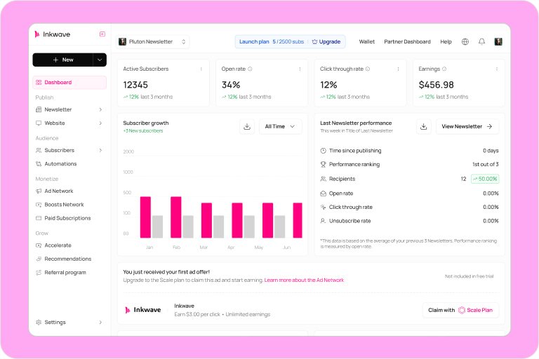
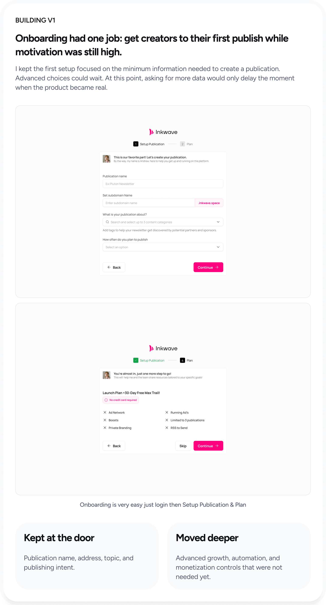
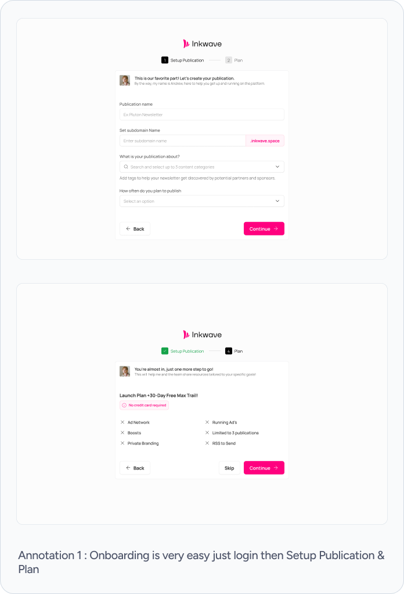
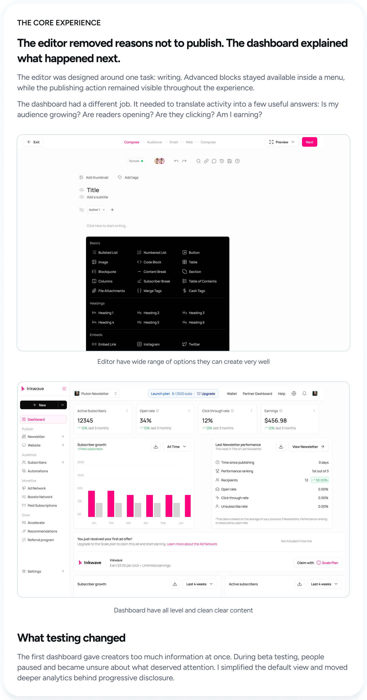
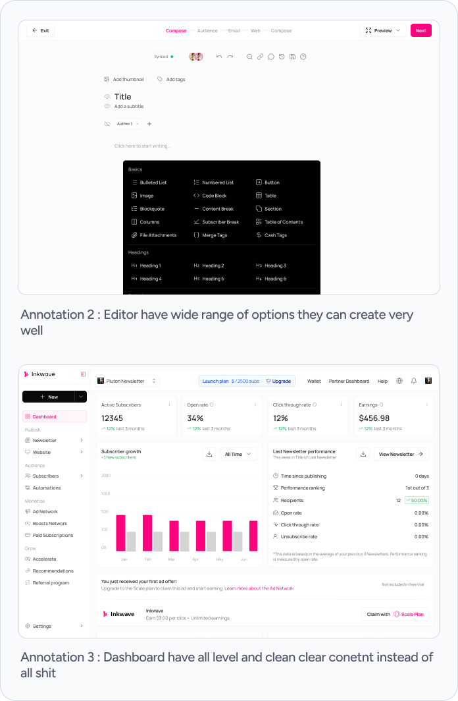
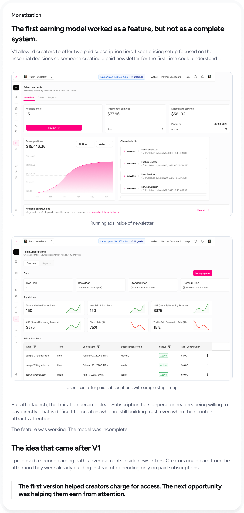
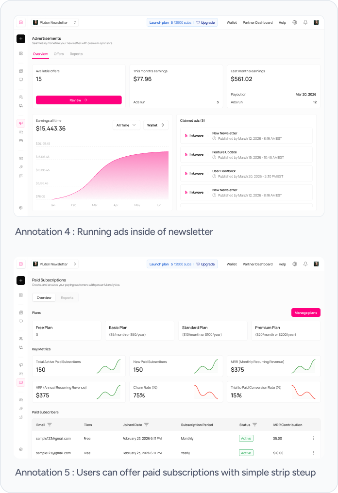
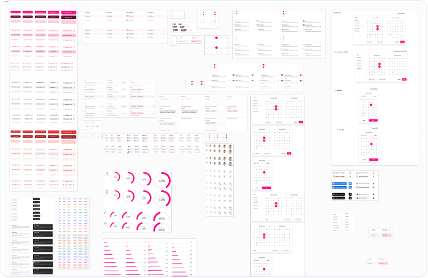
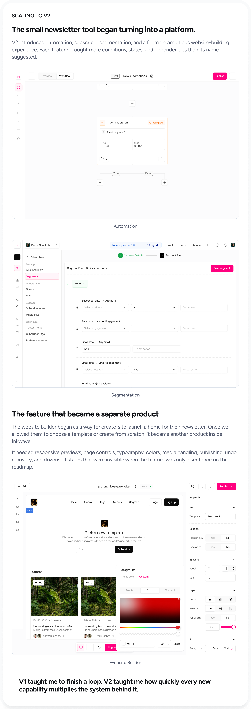
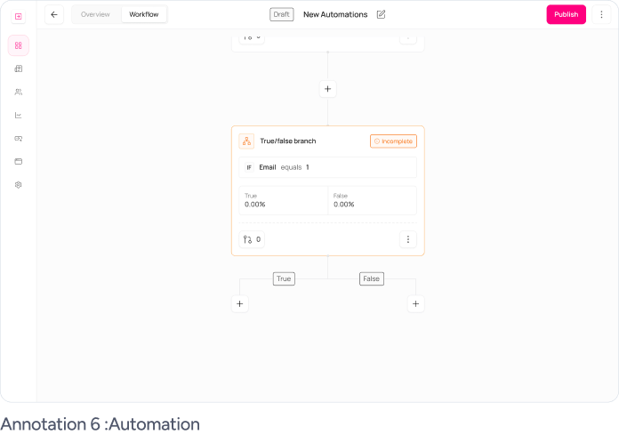

Turning one sentence into a creator business platform.

Inkwave is a newsletter platform where creators can write, publish, grow an audience, and earn from their work in one place. The project started before there was a roadmap, a requirements document, or an existing product to improve.
As the only designer, I had to define the product before I could design it. I worked across the full experience, built the design system, tested V1 with creators, and implemented roughly 70% of the frontend with support from the development team.
After 30 days, 24 of 30 beta creators were still actively using Inkwave.
During the beta, 18 of 30 creators started monetizing their newsletters.
Most creators completed onboarding in under 5 minutes.
Across V1 and V2, Inkwave grew into more than 300 designed screens.
The entire product began with one sentence.
That was the brief. There was no feature list, no product flow, and no answer for what made Inkwave different from the newsletter tools already available.
Before I could design the screens, I had to decide what kind of product deserved to exist.
The market already had newsletter tools. The gap was between creating and earning.
I began with competitor research because we had no existing product behavior to study. I reviewed Substack, Ghost, Beehiiv, and Mailchimp across onboarding, publishing, growth, and monetization.
Their strengths were clear, but so was the tradeoff. Simpler products delayed monetization. More powerful products introduced technical setup, automation, and growth tools before a new creator had published anything.
Easy to start, but the path to earning appeared too late.
Strong capabilities, but too much complexity for a new creator.
Creating useful content takes time and knowledge. Inkwave should make publishing simple, while giving creators a visible path to earning from that effort.
The most important decision was not what to build. It was when to introduce monetization.
It was tempting to ask creators to configure pricing during onboarding. That would make monetization visible immediately, but it would also ask people to price work they had not created yet.
I placed monetization after the first publish. Publishing gives creators a real sense of progress. Once something exists, earning from it feels like the next step instead of another setup task.
First help creators make something worth sharing. Then help them earn from it.
Two developers, four months, and more ideas than we could responsibly build.
The first version needed to feel complete without trying to match products that had been growing for years. I reduced V1 to the smallest loop that could deliver value from beginning to end.
Onboarding, newsletter editor, and a clear path to the first published post.
A dashboard focused on the few signals creators could act on immediately.
Paid tiers creators could configure without learning a complex billing system.
The feature I refused to squeeze into V1
Email automation was valuable, but the development team explained that a meaningful version would be expensive within our timeline. We could have shipped a small set of templates, but competitors already did that.
I recommended moving automation to V2. A limited copy of an existing feature would cost us time without making Inkwave more useful or more distinct.
Protect the publishing and monetization loop first. Add automation when we had enough time to make it genuinely useful.

Onboarding had one job: get creators to their first publish while motivation was still high.
I kept the first setup focused on the minimum information needed to create a publication. Advanced choices could wait. At this point, asking for more data would only delay the moment when the product became real.

Kept at the door
Publication name, address, topic, and publishing intent.
Moved deeper
Advanced growth, automation, and monetization controls that were not needed yet.

The editor removed reasons not to publish. The dashboard explained what happened next.
The editor was designed around one task: writing. Advanced blocks stayed available inside a menu, while the publishing action remained visible throughout the experience.
The dashboard had a different job. It needed to translate activity into a few useful answers: Is my audience growing? Are readers opening? Are they clicking? Am I earning?

What testing changed
The first dashboard gave creators too much information at once. During beta testing, people paused and became unsure about what deserved attention. I simplified the default view and moved deeper analytics behind progressive disclosure.

The first earning model worked as a feature, but not as a complete system.
V1 allowed creators to offer two paid subscription tiers. I kept pricing setup focused on the essential decisions so someone creating a paid newsletter for the first time could understand it.

But after launch, the limitation became clear. Subscription tiers depend on readers being willing to pay directly. That is difficult for creators who are still building trust, even when their content attracts attention.
The feature was working. The model was incomplete.
The idea that came after V1
I proposed a second earning path: advertisements inside newsletters. Creators could earn from the attention they were already building instead of depending only on paid subscriptions.
The first version helped creators charge for access. The next opportunity was helping them earn from attention.
I did not stop when the Figma files were ready.
The developers had prepared the development environment using the design system I created in Figma. I connected Figma MCP with Claude Code and began translating the designs into the working frontend.
I implemented roughly 70% of the frontend. The developers handled the remaining work where the product became technically complex and helped me understand how the interface needed to behave beyond the ideal path.

Thirty creators showed us what the mockups could not.
We launched V1 to a beta group of 30 creators and followed the product for 30 days. It was a small validation group, not proof of product-market fit, but it was enough to test whether the core loop held together.
At the end of the 30-day beta, 24 of 30 creators were still active.
During the beta, 18 of 30 creators started monetizing their newsletters.
60% of beta creators began monetizing through Inkwave.
Testing exposed two priorities: simpler analytics and meaningful automation.
The numbers were encouraging, but the most useful result was clarity. We knew what worked, what confused creators, and what deserved to enter V2.

The small newsletter tool began turning into a platform.
V2 introduced automation, subscriber segmentation, and a far more ambitious website-building experience. Each feature brought more conditions, states, and dependencies than its name suggested.

The feature that became a separate product
The website builder began as a way for creators to launch a home for their newsletter. Once we allowed them to choose a template or create from scratch, it became another product inside Inkwave.
It needed responsive previews, page controls, typography, colors, media handling, publishing, undo, recovery, and dozens of states that were invisible when the feature was only a sentence on the roadmap.
V1 taught me to finish a loop. V2 taught me how quickly every new capability multiplies the system behind it.
Four months turned an open brief into a product people could use, test, and grow.
The value of the work was not the final screen count. It was taking a product from an idea to a working system, learning where the first model failed, and giving the next version a clearer direction.
Within four months, we launched a complete publish-to-earn journey.
80% of beta creators were still active after 30 days.
60% of beta creators began monetizing through Inkwave.
Beta findings shaped V2 around automation, segmentation, and stronger platform foundations.
This was the project where screens became a system.
The scale of Inkwave scared me at first. V1 felt manageable, but every new capability introduced more branches, states, and questions. I had to become comfortable showing unfinished thinking, hearing that a flow was incomplete, and going back into the system instead of defending the first answer.
I also learned that product design is partly the discipline of saying “not yet.” Automation mattered, but it was not more important than making the core loop work. Subscription tiers were logical, but they were not the complete answer to monetization.
Ultimately, Inkwave taught me that building from zero is not about predicting every feature at the beginning. It is about finding the loop that creates value, protecting it from unnecessary complexity, and building a system strong enough to grow beyond the original idea.